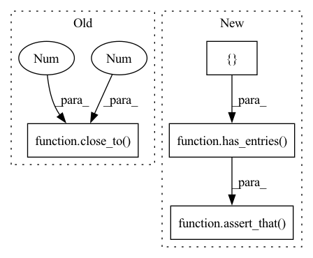

Pattern ID :32417
Before Change
result = NewLabels().run(coco_train_visiondata, coco_test_visiondata, device=device)
// Assert
assert_that(result.value, has_entries(
{"donut": close_to(14, 1), "tennis racket": close_to(7, 1), "all_labels": close_to(387 , 1 ) }
))
After Change
// Act
result = NewLabels().run(coco_train_visiondata, coco_test_visiondata, device=device)
// Assert
assert_that( result.value["new_labels"], has_entries({ "donut": 14, "tennis racket": 7} ))
assert_that(result.value, has_entries(all_labels_count=387))
def test_object_detection_coco_with_condition(coco_train_visiondata, coco_test_visiondata, device):In pattern: SUPERPATTERN
Frequency: 4
Non-data size: 4
Instances Fragment ID: 94576515
Project Name: deepchecks/deepchecks
Commit Name: 1343ac86bccd3a42f5044814dd8e928bcd0b89c9
Time: 2022-05-31
Author: matan@deepchecks.com
File Name: tests/vision/checks/train_test_validation/new_labels_test.py
M Class Name: AnonimousClass
N Class Name: AnonimousClass
M Method Name: test_object_detection_coco(3)
N Method Name: test_object_detection_coco(3)
M Parent Class:
N Parent Class:
M File Name: tests/vision/checks/train_test_validation/new_labels_test.py
N File Name: tests/vision/checks/train_test_validation/new_labels_test.py
M Start Line: 60
M End Line: 62
N Start Line: 58
N End Line: 61
Before Change
result = NewLabels().run(coco_train_visiondata, test, device=device)
// Assert
assert_that(result.value, has_entries(
{"donut": close_to(14 , 1 ) , "-5": close_to(2, 1), "all_labels": close_to(387, 1)}))
def test_classification_mnist_with_condition(mnist_dataset_train, mnist_dataset_test, device):After Change
// Act
result = NewLabels().run(coco_train_visiondata, test, device=device)
// Assert
assert_that( result.value["new_labels"], has_entries({ "donut": 14, "tennis racket": 7} ))
assert_that(result.value, has_entries(all_labels_count=387))
def test_classification_mnist_with_condition(mnist_dataset_train, mnist_dataset_test, device): Fragment ID: 94576514
Project Name: deepchecks/deepchecks
Commit Name: 1343ac86bccd3a42f5044814dd8e928bcd0b89c9
Time: 2022-05-31
Author: matan@deepchecks.com
File Name: tests/vision/checks/train_test_validation/new_labels_test.py
M Class Name: AnonimousClass
N Class Name: AnonimousClass
M Method Name: test_object_detection_coco_new_labels(3)
N Method Name: test_object_detection_coco_new_labels(3)
M Parent Class:
N Parent Class:
M File Name: tests/vision/checks/train_test_validation/new_labels_test.py
N File Name: tests/vision/checks/train_test_validation/new_labels_test.py
M Start Line: 88
M End Line: 89
N Start Line: 85
N End Line: 88
Before Change
result = check_obj.run(train, val, model)
for key, value in result.value.items():
assert_that(key, any(starts_with(metric_name) for metric_name in DEFAULT_MULTICLASS_METRICS))
assert_that(value, close_to(-0.035 , 0.01 ) )
def test_custom_metrics(iris_split_dataset_and_model):After Change
// Assert
train = result.value["train"]
test = result.value["test"]
expected_train = { "Accuracy": close_to(0.96, 0.01), "Precision - Macro Average": close_to(0.96, 0.01),
"Recall - Macro Average": close_to(0.96, 0.01)}
expected_test = {"Accuracy": close_to(0.92, 0.01), "Precision - Macro Average": close_to(0.92, 0.01),
"Recall - Macro Average": close_to(0.92, 0.01)}
assert_that( train, has_entries( expected_train))
assert_that(test, has_entries(expected_test))
def test_custom_metrics(iris_split_dataset_and_model): Fragment ID: 94576519
Project Name: deepchecks/deepchecks
Commit Name: 89ae69f9627cca7402219e97c6d43e88f9887d3e
Time: 2021-11-21
Author: 71635444+yromanyshyn@users.noreply.github.com
File Name: tests/checks/overfit/performance_overfit_test.py
M Class Name: AnonimousClass
N Class Name: AnonimousClass
M Method Name: test_with_diff(1)
N Method Name: test_with_diff(1)
M Parent Class:
N Parent Class:
M File Name: tests/checks/overfit/performance_overfit_test.py
N File Name: tests/checks/overfit/performance_overfit_test.py
M Start Line: 72
M End Line: 77
N Start Line: 89
N End Line: 99
Before Change
result = check_obj.run(train, train, model)
for key, value in result.value.items():
assert_that(key, any(starts_with(metric_name) for metric_name in DEFAULT_MULTICLASS_METRICS))
assert_that(value, close_to(0 , 0.001 ) )
def test_with_diff(iris_split_dataset_and_model):After Change
// Assert
train = result.value["train"]
test = result.value["test"]
expected = { "Accuracy": close_to(0.96, 0.01), "Precision - Macro Average": close_to(0.96, 0.01),
"Recall - Macro Average": close_to(0.96, 0.01)}
assert_that(train, has_entries(expected))
assert_that( test, has_entries( expected))
def test_with_diff(iris_split_dataset_and_model):
// Arrange Fragment ID: 94576522
Project Name: deepchecks/deepchecks
Commit Name: 89ae69f9627cca7402219e97c6d43e88f9887d3e
Time: 2021-11-21
Author: 71635444+yromanyshyn@users.noreply.github.com
File Name: tests/checks/overfit/performance_overfit_test.py
M Class Name: AnonimousClass
N Class Name: AnonimousClass
M Method Name: test_no_diff(1)
N Method Name: test_no_diff(1)
M Parent Class:
N Parent Class:
M File Name: tests/checks/overfit/performance_overfit_test.py
N File Name: tests/checks/overfit/performance_overfit_test.py
M Start Line: 62
M End Line: 67
N Start Line: 72
N End Line: 80